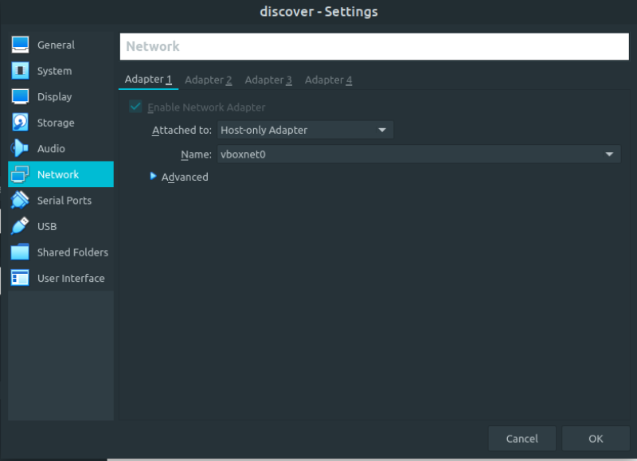
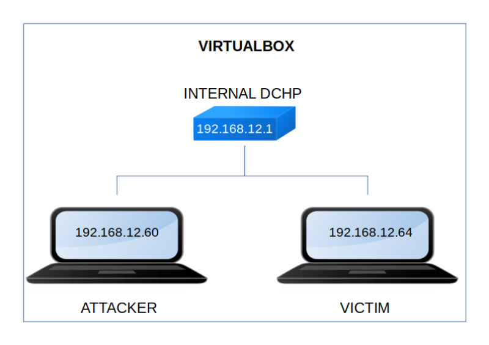

Discover
▸ Discover
▸ 2. Finding Services and Ports
▸ 4.2 Get an user (First flag)
▸ 5.2 Run "/opt/glassfish6/bin/asadmin"
▸ 5.5 Become "root" (Second flag)
Difficulty: Medium.
Flag: 2 flags.
Learning:
• Reconnaissance
Scan Network
Find services
• Enumerate
Gobuster
Subdomain pages
Fuzzing
• Exploitation
PHP Reverse Shell
Overflow program
• Privilege Escalation
User's privileges
Glassfish asadmin
“war” exploit with “msfvenom”
Become root
• Download (Mirror): https://downloads.hackmyvm.eu/discover.zip
Install the machine on VirtualBox:
1. Download the file and extract it.
2. On Virtualbox choose File->Import Appliance.
3. Select the file “ova”.
4. Accept to import.


Watch your Machine IP.
$ ifconfigOutput:

Diagram
